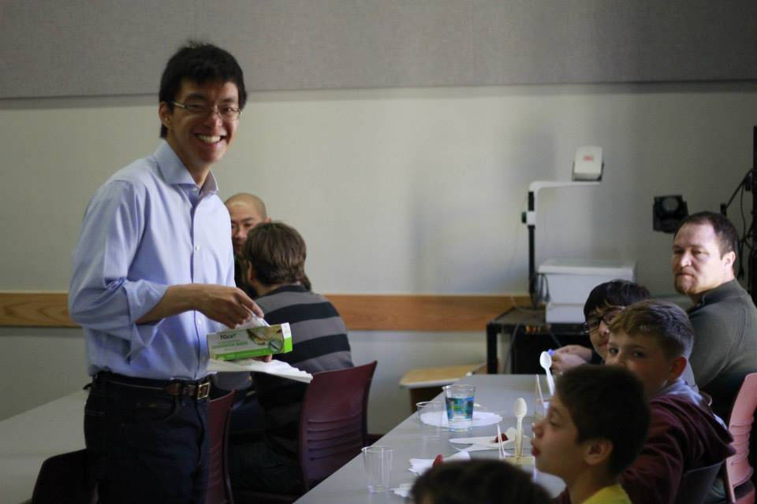

I had the misfortune of running into a seemingly unsuccessful job interview at Starbucks today. The interviewee looked stumped by all the unimpressed interviewer’s questions. To add to the misery, he was wearing a short point-collar balloon-fit plaid flannel shirt, with the top button done up.
The first rule for wearing a button-front shirt is to leave the collar button open - not only is it more comfortable, it even looks better. In fact, if the collar rests higher up on the neck, unbuttoning the top two buttons may be necessary. Wearing a tieless shirt is inherently casual, and fastening all buttons adds unwanted rigidity. Moreover, when a shirt is worn with the collar buttoned, the space between the collar points is meant to be filled. Removing the tie from a buttoned collar without unfastening it leaves the collar looking oddly empty. This rule mandates that only certain collars are meant to be worn without a tie. For example, tab collars or pin collars, where both collar points are meant to be attached together to support a tie from the back, quite obviously shouldn’t be worn without a tie because it will render the collar attachment pointless.
The second rule is that the collar tips must be long enough to touch the shirt front. Otherwise, the collar would flap around awkwardly (or at the very least strangely float in midair) while the wearer moves – a look that is both sloppy and unprofessional. The button-down collar, in which the collar tips are affixed to the shirt front with buttons, constantly ensures the abidance of this rule, making the collar perhaps ideal for tieless wear.
Another rule regarding collars for tieless wear states that collars must be able to support themselves in the absence of a tie. This is pretty easy to understand – one wouldn’t want to wear a collapsed collar. One simple solution is starch, but unfortunately it makes the shirt fabric more susceptible to tearing. Another is to wear shirts with higher collars – such as the traditional American button-down and British-style spreads.
The perhaps final rule to wearing a shirt tieless is disputed and dependent on personal taste – there should always be ample spacing between the two collar points to distract from the necessity of a tie. This rule is based on the assertion that collar point proximity reminds the viewer that a tie is usually worn between those points, defeating the tieless look’s purpose. Though I’ve never found the forward-point collar to be ideal to be worn tieless and do prefer wearing a wide-spread collar tieless, I think this assertion on collar point spacing should be taken with a grain of salt. As long as a collar can be worn with the top button unfastened, its tips can touch the shirt front, and it can support itself without a tie, there is no reason why the said collar cannot be worn without a tie.